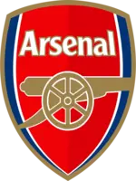

Arsenal F.C.
 Arsenal Football Club (wym. [ˈɑ:sənl] lub [ˈɑ:snəl]; przydomek Kanonierzy) – angielski klub piłkarski z siedzibą w północnym Londynie, w dzielnicy Holloway.
Jest jedną z najbardziej utytułowanych angielskich drużyn, 13-krotnym mistrzem kraju, 14-krotnym zdobywcą Pucharu Anglii i najdłużej utrzymującym się w najwyższej klasie rozgrywkowej zespołem w Anglii – od 1919 roku.
Tradycyjnymi barwami klubu są czerwony i biały. Barwy te w historii klubu przyjmowały różne odcienie. Arsenal zmieniał także swój stadion; początkowo mieścił się on w Woolwich, w południowo-wschodnim Londynie, w 1913 roku drużyna przeniosła się na północ miasta, do Arsenal Stadium w Highbury. W 2006 roku klub przeprowadził się na Emirates Stadium położony w Holloway.